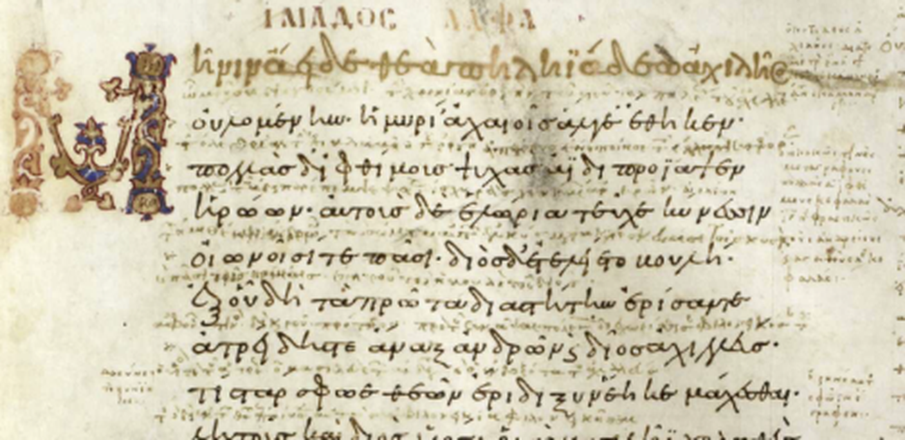

MilHist
Exploring historical conflicts through mapped events, chronology and source comparison.
Project image: Karl XII's movements across Europe · MilHist
Exploring historical conflicts through mapped events, chronology and source comparison.

Reconstructing the administrative and military geography of the late Roman Empire from the Notitia Dignitatum.

Investigating the transmission of the Iliad through ancient witnesses, Greek texts and textual analysis.
Begin with the source. Ask questions. Build the smallest useful instrument. Examine the result. Revise the questions and the instrument.
The three experiments are not presented as finished products. They document how research methods and digital tools can emerge together through sustained dialogue. Explore the method →